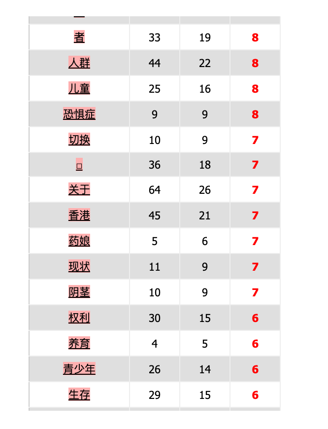

Analyses sous iTrameur
Voici pour chacune des quatre langues, une analyse des résultats obtenus avec l'analyseur textométrique iTrameur.
L'analyse du terme "transgenre" dans quatre corpus linguistiques différents - le chinois, l'anglais, le français et le japonais - offre une perspective interculturelle sur le discours entourant les questions de transgenre dans le monde.
L'analyse textométrique iTrameur du mot "transgenres" dans un corpus de langue française présente une vue ciblée de la façon dont le terme est utilisé contextuellement dans les médias français.
Le graphique du réseau place "transgenres" au centre, lié à des mots tels que "personnes", "femmes", "adolescents" et "enfants". Cela indique que le discours sur les questions de transgenre dans le contexte français est souvent abordé en relation avec différents groupes démographiques, soulignant la nature intersectionnelle des identités transgenres à travers les différents âges et sexes.
Les données tabulaires corroborent ce résultat en montrant la fréquence de cooccurrence ("Cooc") et les indicateurs spécifiques ("IndSP") de ces termes avec "transgenres". Le terme "personnes" occupe une place importante, ce qui suggère que la conversation est encadrée d'une manière humanisante, en se concentrant sur les individus. Les données suggèrent également que les discussions sur les sujets liés au transgenre peuvent fréquemment aborder les droits, les défis ou les expériences liés aux enfants et aux adolescents, compte tenu de leur présence notable dans le graphique et le tableau.
L'analyse indique que la conversation est susceptible d'inclure les différentes étapes de la vie des personnes transgenres, de l'enfance à l'âge adulte. La prévalence de termes non genrés tels que "personnes" par rapport à des termes spécifiques au genre tels que "femmes" suggère une évolution possible vers une discussion plus inclusive et plus large de l'identité de genre, au-delà des notions binaires d'homme et de femme.
En résumé, l'analyse du corpus français de "transgenres" révèle un discours à la fois inclusif et diversifié, avec un accent particulier sur l'intersection des identités transgenres avec les différents groupes d'âge et l'expérience humaine en général. L'analyse du mot "transgender(transgenre)" dans un corpus de langue anglaise à l'aide de l'outil d'analyse textométrique iTrameur révèle un réseau complexe de termes associés, reflétant les multiples facettes du discours sur les questions liées au transgenre.
Le graphique du réseau montre que "transgender(transgenre)" est le nœud central, entouré de termes tels que "non-binary(nonbinaire)", "community(communauté)", "health(santé)" et "population". Ces liens suggèrent que les discussions sur les questions transgenres sont étroitement liées aux questions d'identité, de groupe social et de bien-être. Notamment, le terme "non-binary(nonbinaire)" apparaît de manière proéminente, ce qui indique que les discussions vont au-delà des binaries de genre traditionnels.
Les données tabulaires renforcent l'importance de la "health(santé)" dans le discours, avec une fréquence élevée d'occurrences à côté de "transgenre". Cela pourrait indiquer que la communauté transgenre accorde une grande importance aux questions liées à la santé. D'autres termes tels que "men", "report" et "bisexual" montrent l'intersectionnalité des sujets transgenres avec divers aspects de la société et de l'identité.
Le corpus anglais sur les "transgenres" semble dépeindre un discours actif, semblable à un mouvement. Il comprend un lexique politique, avec des termes tels que "generation" et "gap", qui suggèrent des différences ou des clivages générationnels dans la perception et l'acceptation des personnes transgenres. L'absence de langage péjoratif dans les termes les plus fréquents indique un discours qui accepte mieux les identités transgenres ou, du moins, qui ne les critique pas ouvertement. 
Les données tabulaires complètent le graphique visuel en quantifiant la fréquence et la spécificité de ces termes par rapport à "跨性別". Le terme "人权" semble avoir une fréquence et un indice de spécificité élevés, soulignant que les droits de l'homme sont un aspect important du discours transgenre dans le corpus. D'autres termes tels que "女性"(femme), "男性" (homme) et "生活" (vie) figurent également en bonne place, ce qui indique que la conversation peut porter sur les expériences vécues par les personnes transgenres, ainsi que sur leurs droits et leurs rôles dans la société.
En résumé, l'analyse du corpus chinois de "跨性別"(transgenre) révèle une discussion multidimensionnelle qui aborde diverses facettes de la vie et des droits des transgenres. Le discours reflète des considérations à la fois personnelles et sociales, indiquant une conversation dynamique autour du sujet des identités transgenres dans le monde de langue chinoise. Dans le corpus chinois, le terme "跨性別" est discuté de manière multifacette, se connectant à un large éventail de termes allant de l'identité personnelle aux problèmes sociaux plus larges, avec un accent notable sur les droits de l'homme. Cela suggère un discours étendu qui prend en compte à la fois les expériences individuelles et les implications sociétales plus larges.
Dans le corpus anglais, le discours est marqué par une forte connexion à la santé, à la communauté et à la population, indiquant un accent sur le bien-être et les aspects sociaux des individus transgenres. Cela suggère un dialogue inclusif et intersectionnel qui considère divers aspects de l'identité et de la participation sociétale.
En français, l'analyse montre que "transgenres" est souvent associé à différents groupes démographiques, tels que les femmes, les adolescents et les enfants, soulignant les expériences diverses au sein de la communauté transgenre et l'importance de l'inclusivité à travers les différentes étapes de la vie.
Et en japonais, le terme "トランスジェンダー" semble être étroitement associé à "性同一性障害" (trouble de l'identité de genre), indiquant une perspective médicale possible dans le discours. Cela pourrait refléter une approche culturelle différente des problèmes transgenres, une qui pourrait encadrer la conversation dans un contexte médical.
En conclusion, dans les quatre langues, le discours sur les sujets transgenres reflète un dialogue nuancé et complexe qui englobe une gamme de thèmes incluant l'identité, les droits, la santé et la communauté. Bien que chaque corpus présente un ensemble unique de points focaux et de perspectives culturelles, il existe un fil commun de chercher à comprendre et à articuler les expériences et les droits des individus transgenres. L'analyse souligne l'intersectionnalité des problèmes transgenres avec diverses dimensions sociétales, telles que la politique, la santé et les droits de l'homme, tout en révélant comment différentes cultures peuvent encadrer ces discussions de manières uniques.
Analyses d'iTrameur & Plurilangue
 L'analyse textométrique iTrameur du terme "跨性別" (transgenre) dans un corpus en langue chinoise fournit un paysage détaillé de la façon dont le terme est intégré dans le discours au sein des médias chinois.
Le graphique du réseau montre "跨性別" au centre, entouré d'un large éventail de termes qui indiquent une conversation diversifiée et complexe autour des questions de transgenre. Les termes vont de ceux liés à l'identité personnelle, tels que "性别" (genre) et "女性" (femme), à des concepts sociétaux plus larges, tels que "人权" (droits de l'homme) et "社会" (société), ce qui suggère que la discussion englobe à la fois des dimensions individuelles et sociétales.
L'analyse textométrique iTrameur du terme "跨性別" (transgenre) dans un corpus en langue chinoise fournit un paysage détaillé de la façon dont le terme est intégré dans le discours au sein des médias chinois.
Le graphique du réseau montre "跨性別" au centre, entouré d'un large éventail de termes qui indiquent une conversation diversifiée et complexe autour des questions de transgenre. Les termes vont de ceux liés à l'identité personnelle, tels que "性别" (genre) et "女性" (femme), à des concepts sociétaux plus larges, tels que "人权" (droits de l'homme) et "社会" (société), ce qui suggère que la discussion englobe à la fois des dimensions individuelles et sociétales. L'analyse textométrique iTrameur du terme "トランスジェンダー" (transgenre) dans un corpus en langue japonaise offre une vue concise de l'utilisation du terme et des associations contextuelles dans les médias japonais.
Le graphique du réseau représente "トランスジェンダー" comme nœud central, avec des connexions à un nombre nettement inférieur de termes par rapport aux analyses anglaise et française, ce qui suggère un discours plus ciblé. Le terme "性同一性障害" (trouble de l'identité de genre) est lié, ce qui indique que les discussions sur les questions de transgenre sont potentiellement encadrées dans le contexte d'un discours médical ou psychologique.
L'analyse textométrique iTrameur du terme "トランスジェンダー" (transgenre) dans un corpus en langue japonaise offre une vue concise de l'utilisation du terme et des associations contextuelles dans les médias japonais.
Le graphique du réseau représente "トランスジェンダー" comme nœud central, avec des connexions à un nombre nettement inférieur de termes par rapport aux analyses anglaise et française, ce qui suggère un discours plus ciblé. Le terme "性同一性障害" (trouble de l'identité de genre) est lié, ce qui indique que les discussions sur les questions de transgenre sont potentiellement encadrées dans le contexte d'un discours médical ou psychologique.  Les données du tableau confirment la forte association entre "トランスジェンダー" et "性同一性障害", avec un indice de spécificité (IndSP) significatif pour ce dernier terme. La prédominance de ce terme peut refléter la médicalisation des identités transgenres dans le contexte japonais, une perspective qui catégorise les expériences transgenres dans le domaine du diagnostic médical.
De plus, la présence d'un point rouge dans les données tabulaires, sans étiquette correspondante dans l'image fournie, suggère qu'il pourrait y avoir un autre terme ou concept significatif associé à "トランスジェンダー" qui n'a pas été capturé dans le graphique visuel. Ce terme a une fréquence de cooccurrence élevée (Cooc) et un fort indice de spécificité, ce qui indique son importance dans le discours, bien qu'il ne soit pas possible de l'identifier sans l'étiquette du texte.
En résumé, l'analyse du corpus japonais de "トランスジェンダー" indique une discussion qui peut être influencée par des perspectives médicales sur l'identité de genre, ce qui pourrait façonner la compréhension du public et la politique concernant les personnes transgenres au Japon.
Les données du tableau confirment la forte association entre "トランスジェンダー" et "性同一性障害", avec un indice de spécificité (IndSP) significatif pour ce dernier terme. La prédominance de ce terme peut refléter la médicalisation des identités transgenres dans le contexte japonais, une perspective qui catégorise les expériences transgenres dans le domaine du diagnostic médical.
De plus, la présence d'un point rouge dans les données tabulaires, sans étiquette correspondante dans l'image fournie, suggère qu'il pourrait y avoir un autre terme ou concept significatif associé à "トランスジェンダー" qui n'a pas été capturé dans le graphique visuel. Ce terme a une fréquence de cooccurrence élevée (Cooc) et un fort indice de spécificité, ce qui indique son importance dans le discours, bien qu'il ne soit pas possible de l'identifier sans l'étiquette du texte.
En résumé, l'analyse du corpus japonais de "トランスジェンダー" indique une discussion qui peut être influencée par des perspectives médicales sur l'identité de genre, ce qui pourrait façonner la compréhension du public et la politique concernant les personnes transgenres au Japon.
Conclusion